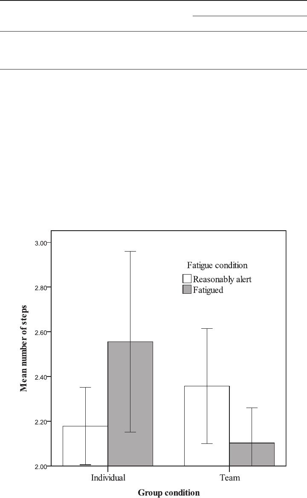

The Effects of Group Monitoring on Fatigue-Related Einstellung During
Mathematical Problem Solving
Daniel Frings
London South Bank University
Fatigue resulting from sleep deficit can lead to decreased performance in a variety of cognitive
domains and can result in potentially serious accidents. The present study aimed to test whether
fatigue leads to increased Einstellung (low levels of cognitive flexibility) in a series of mathematical
problem-solving tasks. Many situations involving fatigue and problem solving also involve people
working in teams. However, little research has considered the role of social processes in managing
the effects of fatigue. Research into the group monitoring hypothesis suggests that membership in
a team can offset the effects of impairing factors such as fatigue upon performance. Thus, the present
study also aimed to test whether group membership exacerbates or ameliorates the negative effects
of fatigue. During the course of a weekend military training exercise, participants (N ϭ 171)
attempted to solve a series of problems either alone or in a team, and while either reasonably alert
(nonfatigued) or fatigued through sleep deficit. Fatigued problem solvers working alone showed
increased Einstellung. In contrast, and in line with the group monitoring hypothesis, teams of
fatigued problem solvers did not experience increased Einstellung. The present study also showed
that teams with a group member who was relatively less fatigued experienced less Einstellung than
other groups. These effects persisted even once participants were cued toward more direct strategies.
These findings highlight the risk of Einstellung when fatigued and also the importance of team
membership with reference to problem solving in an occupational context.
Keywords: Einstellung, problem solving, group fatigue, sleep
Fatigue can be described as a physiological and/or a mental state
that impairs cognitive performance (see Noy et al., 2011; Rabin-
bach, 1990). Factors contributing to cognitive or general mental
fatigue include high mental workload, sustained work effort, cir-
cadian time of day effects, and especially sleep deficit and night
work (Krueger, 1989). The present study focuses upon cognitive
fatigue resulting from sleep deficit (cumulative sleep loss over a
number of nights), which has been linked to fatigue sufficient to
impair performance (Van Dongen & Maislin, 2003). Such fatigue
can lead to lower quality decision making and poor situational
awareness, which can lead to serious accidents (see Miller, Mat-
sangas & Shattuck, 2008; Yegneswaran & Shapiro, 2007). For
instance, in the case of transportation operators, fatigue was linked
with a third of “on passage” incidents involving large shipping in
waters in the United Kingdom between 1994 and 2003 (Marine
Accident Investigation Board, 2004). Similarly, a significant pro-
portion of poor medical decisions are made by fatigued workers
(e.g., Gander, Miller, Webster & Merry, 2008; Landrigan et al.,
2004). Although many of these working populations operate in
small groups or teams, little research has addressed the social
processes that may exacerbate or ameliorate the effects of fatigue.
Drawing on social psychological theory, the research reported here
aims to address this gap by investigating how fatigue affects
problem solving, and the role group or team membership plays in
these processes.
Fatigue and Problem Solving
To some extent, fatigue can be deleterious to problem solving in
many practical situations, such as the two cited previously. For
instance, marine navigators must spot traffic patterns and calculate
the safest, quickest route to a destination. Similarly, medical staff
must coordinate information to link symptoms, causes and treat-
ments. Fatigue has been shown to interfere with the safe execution
of such tasks—for instance, fatigue because of shift work has been
linked with a 36% increase in medical errors classed as “serious”
(see Landrigan et al., 2004; Papp et al., 2004). Existing research
has identified a number of possible processes through which
fatigue affects performance, such as simple and complex attention,
memory, poor risk perception and slower response time (Ferguson,
Paech, Dorrian, Roach & Jay, 2011; Kilgore et al., 2008; Lim &
Dinges, 2010).
A further possible, but as yet untested, mechanism that may
affect fatigued problem solvers’ ability is through a reduction in
cognitive flexibility (the ability to shift between problem-solving
solutions; see Luchins, 1942), reflected by “Einstellung.” Einstel-
lung is said to be present when a problem-solving method that was
This article was published Online First August 15, 2011.
This research was supported by ESRC Grant RES-000-22-3460 and
complies with BPS and APA ethical guidelines. The author would also like
to thank the London University Officer Training Corps for assistance
given. This work has been previously presented at the British Psycholog-
ical Society Social Section Conference, 2010.
Correspondence concerning this article should be addressed to Daniel
Frings, Department of Psychology, London South Bank University, Lon-
don, United Kingdom, SE1 6LN. E-mail: fringsd@lsbu.ac.uk
Journal of Experimental Psychology: Applied © 2011 American Psychological Association
2011, Vol. 17, No. 4, 371–381 1076-898X/11/$12.00 DOI: 10.1037/a0025131
371
previously optimal and efficient is retained and causes suboptimal,
inefficient performance on a new problem (Luchins, 1942; Luchins
& Luchins, 1969). Einstellung is characterized by an inability to
shift task sets, inflexible thinking, and an overreliance on previ-
ously identified solutions, regardless of their appropriateness. It
has been shown to affect both novices and expert problem solvers
(e.g., Bilalic´, McLeod & Gobet, 2008; Luchins, 1942), is linked to
attentional biases (Bilalic´, McLeod & Gobet, 2010), and is partic-
ularly prevalent when problem solvers are under stress or cognitive
load (Schultz & Searleman, 1998).
Understanding whether fatigue induces Einstellung is important,
because flexible thinking during problem solving is vital in a
variety of contexts, and an overreliance on existing assumptions
can be hazardous in any situations where problem environments
are changeable (Can˜as, Quesada, Antolı´, & Fajardo, 2003). For
instance, Einstellung during medical diagnosis can lead to possible
misdiagnosis if linking symptoms to diagnosis becomes “routine.”
Military decision makers experiencing Einstellung may overlook
potential risks and opportunities in changing situations (see Miller
et al., 2008).
The presence of Einstellung is typically tested by using task sets
that have multiple problems of the same type, which can be solved
using the same solution. After a number of problems are presented
(sufficient that the standard solution is expected), critical problems
are presented that can be solved either with the standard solution
or one that is more efficient and subjectively obvious. By testing
the extent to which problem solvers fail to recognize and use the
more efficient solution, the degree to which they experience Ein-
stellung can be assessed.
To our knowledge, no previous research reports have tested the
effects of fatigue because of sleep deficit on the prevalence of
Einstellung during problem solving. However, task fatigue (fatigue
because of sustained effort on repetitive tasks rather than sleep
deficit) has previously been linked to inability to switch rules when
carrying out the Wisconsin Card sorting task (van der Linden,
Frese & Meijman, 2003), which is analogous to an Einstellung
effect. In addition, factors that may encourage Einstellung effects
(lowered vigilance, impaired executive function) are also increased
by fatigue (see Lamond & Dawson, 1999; Williamson & Feyer,
2000).
A common way of testing for Einstellung effects is via the
“water jar” mathematical problem set outlined by Luchins and
Luchins (1969). In this task, participants answer a series of math-
ematical problems, divided into two sets. The task is to solve each
problem in as few steps as possible. The first set can be solved with
a single strategy which, once discovered, consistently solves the
problem in the fewest steps possible. A second set of problems is
then introduced, which can still be solved using the original
strategy, but can also be solved by a novel, even more efficient
strategy. Because the aim of the task is to solve the problems in the
fewest steps, failing to switch strategies reflects Einstellung. The
present study compares the performance of problem solvers who
are fatigued (because of sleep deficit) or reasonably alert (without
sleep deficit). Given other effects of fatigue, and the evidence that
task fatigue can lead to similar effects to Einstellung, it is predicted
that problem solvers will experience greater Einstellung when
fatigued than when reasonably alert.
Fatigue and Team Membership
Many occupations involve people working in groups (a number
of people who may or may not have a history of working together
but who share common goals; see Johnson & Johnson, 1987).
Often these groups are teams. Teams are the focus of the present
investigation and are defined as a group of people who share
common goals, have a history of working together, and who have
knowledge of various members’ strengths and weaknesses (see
McGrath, 1984). Examples of teams include doctors and emer-
gency workers operating in shift teams, ships crews working in
watches, project teams in creative and engineering industries, and
many others.
Despite the prevalence of teams in occupational settings (see
Swezey & Salas, 1992), research focusing on ways to ameliorate
fatigue typically focuses on managing work-rest cycles to mini-
mize sleep deficit and, in the case of military applications, the
controlled use of stimulants to offset it (see Biggs et al., 2007;
Caldwell, Mallis, Caldwell, Miller & Neri, 2009; Neri et al., 2002).
This focus has resulted in the potential role of team membership
and associated social processes being very nearly ignored. Theo-
retical and empirical work suggests that group/team membership
may affect the level of Einstellung among fatigued workers in a
number of ways.
Social Loafing and Conformity
When effort is divided among members, team membership can
lead to some individuals exhibiting poor performance, a phenom-
enon known as social loafing (a reduction in task motivation). This
can occur because of reduced effort being expended upon a task
(Hart, Karua, Stasson & Kerr, 2004; Karau & Williams, 1993) or
because resources are expended attending to social processes
rather than the task (Gastorf, Suls, & Sanders, 1980; Muller &
Butera, 2007; Muller & Fayant, 2010). Because fatigue can also
decrease motivation (Mikulincer, Babkoff, Caspy & Sing, 1989),
this effect may be particularly pronounced among fatigued teams.
Hoeksema-van Orden, Gaillard, and Buunk (1998) observed social
loafing in fatigued groups when group members were unaccount-
able to one another. However, once group members’ effort levels
were known to one another, the magnitude of this effect decreased.
These findings suggest that when team members are unaccount-
able to one another, loafing can occur.
In addition to social loafing, group/team membership can also
lead to conformity. Research into social conformity indicates that
group members (especially in cohesive groups) look to one another
for guidance when situations are ambiguous (e.g., Marques,
Abrams & Serodio, 2001; Sherif, 1936). Cues for ways to behave
are guided by the behavior of individual team members, especially
when the behaviors are performed in front of other team members
(Abrams, Wetherell, Cochrane, Hogg, & Turner, 1990). This may
particularly affect a team’s ability to avoid Einstellung. If a non-
optimal strategy is adopted by a team, individual conforming team
members may be less likely to intervene with a new, potentially
improved, strategy.
A final detriment related to team membership is coordination
demands and subsequent process loss (see Steiner, 1972). Groups
need to spend time and energy coordinating the dissemination of
relevant information and ideas that could otherwise be spent on the
372
FRINGS
task (coordination demands). Failure to communicate relevant
information effectively or incidents of team members unintention-
ally blocking or duplicating others’ efforts can also lead to poor
performance relative to a similar number of people working inde-
pendently (process loss).
In summary, team membership may decrease performance in
Einstellung tasks in a number of ways. Individual team members
may loaf and not attend to the task. In addition, group conformity
may stifle the generation of new ideas and more efficient solutions.
These negative effects of team membership would be indicated by
poor performance (e.g., less problems solved, more Einstellung)
among teams relative to individuals. While these effects may be
present among reasonably alert teams, they are likely to be par-
ticularly pronounced among teams that are fatigued. Because fa-
tigued team members may already be experiencing decreased
motivation and exhibiting poor performance, they may be more
inclined to loaf than reasonably alert team members. Coordination
demands may consume a greater proportion of the (smaller) re-
source pool available to fatigued teams. Finally, it is also possible
that this decrease in motivation makes conformity more likely,
hampering the creation of efficient solutions, and leading to in-
creased Einstellung. It is reasonable to suppose that this would be
especially problematic for fatigued groups where the possibility of
team members initially applying nonoptimal solutions may be
greater. If it is the case that fatigued teams are particularly sus-
ceptible to these effects, it would be expected that fatigued groups
should be outperformed not only by reasonably alert individuals
and teams, but also by fatigued individuals.
Social Facilitation and Information Pooling
In contrast to the evidence outlined previously, other research
points to the beneficial effects of team membership. Being part of
a team can lead to an increase in motivation, encouraging individ-
uals to direct more effort at a task. Specifically, research into social
facilitation suggests the mere presence of others can lead to im-
proved performance by increasing the “dominant” response; for
example, people try harder and more persistently at tasks they are
familiar with (Triplett, 1898; Zajonc & Sales, 1966). This effect
occurs particularly when group members perceive themselves and
their performance as being accountable to other group members
(Geen, 1989). In studying team decision making, Baranski,
Thompson, Lichacz, and McCann (2007) observed social facilita-
tion among fatigued groups who undertook interdependent tasks
(i.e., tasks where group members separately performed a task and
all members had to be accurate for the group to succeed). This
suggests that social facilitation can occur among fatigued groups.
However, this study was limited in its ecological validity, in that
communication among group members was limited, and group
members attempted to complete separate parts of the same task,
rather than working together on a single problem.
As well as trying harder, being in a group brings the potential
benefit of several viewpoints. Groups can monitor the quality of
information coming from individual group members and weigh its
accuracy and importance before reaching a final decision. This
reduces error because outlying judgments are given less weight in
final decisions than commonly held ones (Frings, Hopthrow,
Abrams, Hulbert & Gutierrez, 2008; Harries, Yaniv, & Harvey,
2004; Yaniv, 2004).
A final mechanism by which the potential detriments associated
with team membership can be offset is by the presence of a
high-performing team member who can act as an effective leader.
Team leaders have been shown to be effective at reducing process
loss and increasing motivation by guiding group behavior (e.g.,
Hogg, 2001). Under conditions of fatigue, an effective leader could
be someone who is more capable than other team members either
through their ability to motivate others, their task-relevant baseline
ability levels (e.g., they are affected by fatigue but are better at a
given task), or by decreased susceptibility to fatigue (so they are
not as impaired). It is also possible that the probability that the
group will contain such a team member is higher than the proba-
bility that any one individual will be a “good” problem solver.
Thus, if groups perform at a level equivalent to their best mem-
ber’s performance, a team of four people should be more likely to
reach the ideal solution than a single individual (e.g., Hill, 1982;
Laughlin, Hatch, Silver & Boh, 2006). Previous research has
demonstrated the importance of such team members on perfor-
mance while fatigued: For instance, Haslam and Abraham (1987)
showed that groups can operate effectively even under high levels
of fatigue if effectively led.
If social facilitation, effort pooling, and leadership gains are
present during a task, a consistently better performance (e.g., more
problems solved, less Einstellung) can be expected from teams
relative to individuals, regardless of fatigue levels. An important
conceptual note is that existing research into the benefits of team
membership does not specify that the effects of team membership
should be amplified (or lessened) by the presence or absence of
other, possibly impairing, contextual factors such as fatigue. Thus,
no clear predictions can be made as to whether groups will expe-
rience differing levels of facilitation under conditions of fatigue or
while reasonably alert. One model that begins to address this issue
is the group monitoring hypothesis (Abrams, Hopthrow, Hulbert,
& Frings, 2006).
Group Monitoring
The group monitoring hypothesis argues that teams may be
relatively unaffected by impairing factors, such as fatigue, relative
to individuals. It also argues that benefits of team membership may
occur particularly in situations where other contextual factors
(such as fatigue) which may impair individual performance are
present. There are a number of processes that may underlie this
protective effect. Individual team members may be motivated
by their teammates to overcome impairment. Teams may ben-
efit from the viewpoints of several individuals allowing the
pooling of ideas and comparison of information before reaching
a decision. Teams are also likely to contain individuals who
have the skills sets required to complete the problem, or indi-
viduals who are less affected by the impairing factor. Uniquely,
the group monitoring hypothesis predicts that the beneficial
effects of team membership are expected to be most pronounced
when impairing factors are present: among teams who do not
face potentially impairing contexts, the benefits of team mem-
bership may go relatively unnoticed, or may not be required.
There are a number of reasons to expect improvements in team
performance to be of greater magnitude under conditions of fatigue
than under conditions of reasonable alertness. Several explanations
for the negative effects of fatigue argue that the “resources”
373
GROUP MONITORING AND FATIGUE
available to individuals are reduced because of lower levels of
arousal and motivation (e.g., Johnson, 1982; Mikulincer et al.,
1989). Groups and teams have been shown to increase arousal,
task engagement effort, and motivation (see Baranski et al., 2007;
Triplett, 1898; Zajonc & Sales, 1966). Some tasks require low
levels of effort, and therefore require a relatively low level of
cognitive resources, at least when a person is not fatigued. Perfor-
mance by reasonably alert participants in such cases should be
relatively high. In such a context, group membership may offer
increased motivation and effort, but if sufficient levels of these
factors are already present, such increases may not result in mark-
edly improved performance. In contrast, under conditions of fa-
tigue, the same tasks may require more effort and higher levels of
engagement by both individuals and by team members. Increased
motivation (because of group membership) under fatiguing cir-
cumstances could be expected to result in increases in perfor-
mance. A similar argument can be made in terms of the effect of
information pooling. Among reasonably alert individuals, error
levels for a given task may be relatively low. Team membership
may further reduce these errors, but this may not be particularly
impactful on overall team performance. However, as team mem-
bers become more fatigued, errors among individual team mem-
bers become increasingly likely. In turn, the utility of being able to
monitor the quality of judgments and potential solutions and also
to reject erroneous information becomes greater. Thus, the group
monitoring hypothesis predicts that, under some circumstances,
the benefits of team membership will only become apparent when
teams are fatigued.
A further process possibly underlying group monitoring is that
fatigued team members may recognize the degree of each individ-
ual team member’s impairment and rely upon the least impaired
team member more than others, particularly if solutions can be
clearly demonstrated (see Laughlin, 1980). Because the probability
of a team having a relatively less impaired member is higher than
the probability of an individual being relatively less fatigued, team
performance should, on average, be superior. Thus, better perfor-
mance is particularly expected among fatigued teams that contain
one or more relatively less fatigued members—an individual who
can act as a leader.
To date the group monitoring hypothesis has only been tested in
the context of alcohol intoxication. Abrams et al. (2006) showed
that individuals who had a blood alcohol concentration equivalent
to the drunk driving limit in the United Kingdom made riskier
decisions than individuals who received a placebo. In contrast,
groups did not find risky bets attractive, regardless of whether they
were intoxicated or not. There was no difference in risk perception
between individuals and groups in the placebo condition. Frings et
al. (2008) showed that during an auditory vigilance task intoxi-
cated individuals had a higher error rate (over/under estimation of
how many times a target word appeared) than individuals who had
received a placebo. Placebo individuals also had a lower error rate
than intoxicated group members who made estimates in the pres-
ence of other group members (without communication), however,
the difference in error rate was significantly reduced. It is impor-
tant to note that when group members had the opportunity to
discuss their responses before reaching a unified decision, intox-
icated groups had the same error rate as placebo individuals and
placebo groups. Again, there was no difference in error rates
between individuals and groups in the placebo conditions. Overall,
these findings suggest that group monitoring shields group mem-
bers from the effects of alcohol by increasing motivation because
of evaluative pressure from other members, allowing the pooling
of information, and the rejection of erroneous judgments. It also
appears that these increases are more beneficial in contexts in
which other impairing factors are present: there was no difference
in error rates between placebo groups and placebo individuals,
while there was a significant difference between intoxicated
groups and intoxicated individuals.
If the group monitoring hypothesis can be applied to problem
solving among fatigued teams, a number of predictions can be
made. Specifically, it would be expected that there would be an
increase in Einstellung and a decrease in problem solving ability
among fatigued individuals, but not among fatigued teams. It can
also be expected that improvements in team performance, relative
to individual performance, should be particularly pronounced un-
der conditions of fatigue. This would be reflected by little or no
difference in performance between reasonably alert teams and
reasonably alert individuals, and significantly better performance
by fatigued teams relative to fatigued individuals.
In summary, social psychology suggests that team membership
may either increase or decrease problem solving performance and
levels of Einstellung. Uniquely, the group monitoring hypothesis
suggests that team membership may increase performance espe-
cially under conditions where it would otherwise be impaired. The
present experiment tests the effects of fatigue and team member-
ship on problem solving ability and also Einstellung (lack of
cognitive flexibility) using the “water jar” mathematical problem
set outlined by Luchins and Luchins (1969; see below). It was
predicted that increased fatigue would lead to decreased problem
solving performance and increased Einstellung effects among in-
dividuals. However, the group monitoring hypothesis predicts that
group membership can offset such impairment; thus fatigue was
not predicted to lead to a decrease in problem solving ability nor
to increased Einstellung among teams.
A specific process that may underlie this effect is that teams
have a higher probability of containing an “able” group member
who is able to perform at a high level even after experiencing sleep
loss. This may be because of either higher baseline ability, or
lower susceptibility to fatigue because of sleep loss. Presumably
such members are able to act as a leader by being more able to
solve problems and avoid Einstellung. When such members are
present, it can be expected that other group members will utilize
their judgments and abilities, leading to higher team level perfor-
mance. To test this process, it was also hypothesized that teams
with a single member who subjectively experiences lower levels of
fatigue after sleep deficit would outperform teams whose least
fatigued member reports higher levels of fatigue.
To test these hypotheses, problem solvers working either alone
or as part of a team were asked to solve a series of mathematical
problems while they were either reasonably alert or fatigued be-
cause of sleep deficit. By comparing the performance of reason-
ably alert and fatigued individuals (in terms of both number of
problems solved and the amount of Einstellung present), the ef-
fects of fatigue can be identified. An interaction between fatigue
and group membership was expected. Specifically, in line with
group monitoring, it was expected that reasonably alert individuals
and groups would solve a similar number of problems, and show
a similar level of Einstellung. Comparing the performance of
374
FRINGS

reasonably alert and fatigued groups to each other and to individ-
uals’ performance allows an assessment of the effects of team
membership on fatigued performance. The group monitoring hy-
pothesis predicts fewer solved problems and increased Einstellung
among fatigued individuals (relative to reasonably alert individu-
als) but not among fatigued groups (relative to reasonably alert
individuals and groups), indicating that team membership can
offset the effects of fatigue.
Method
Participants
One hundred seventy-one Army Officer Cadets were recruited
from the University of London Officer Training Corps. Ages
ranged from 18 to 24. Seventy-two percent of the sample was
male. Participants were randomly allocated to condition. Thirty-six
participants took part as individuals (21 reasonably alert and 15
fatigued), and 135 took part as team members (21 reasonably alert
teams, 13 fatigued). Differences in number of teams and individ-
uals in the fatigued condition were because of participant with-
drawal before the start of the fatigued testing session.
Design
A2ϫ 2 between-subjects design was used: (Group condition:
team vs. individual) ϫ (Fatigue condition: fatigued vs. reasonably
alert). Participants were randomly assigned to conditions. Partici-
pants in the team condition completed the problem-solving tasks in
groups of four (except one group, which consisted of three). Team
members for any particular team were drawn from the same
platoon. Participants in the study had been in the same platoon for
at least 6 months. The gender mix within each team was not
controlled.
1
Dependent variables consisted of the number of cor-
rectly completed problems, and the number of steps taken to
complete each problem. An adapted version of the Piper Fatigue
Scale (Piper et al., 1998) was used as an assessment of subjectively
rated fatigue levels.
Measures
Fatigue. Eight items from the original Piper Fatigue Scale
were selected to rate the level of fatigue. This scale was selected
because it measures fatigues across a number of domains. Specif-
ically, it measures perceived degree of fatigue, fatigue related
affect and also perceived levels of cognitive impairment attributed
by the participant to fatigue (rather than to other contextual fac-
tors). Three items asked participants: “How would you describe
the intensity of severity of the fatigue which you are experiencing
now?”, “To what degree is the fatigue you are now feeling inter-
fering with your ability to complete tasks set for you?”, and “To
what degree would you describe the fatigue you are experiencing
as being?” A seven-point scale was used for each item. The first
two items were anchored at 1 (None)and7(A great deal). The
latter item was anchored at 1 (Mild)and7(Severe). A further five
items measured “To what extent are you now feeling” followed by
seven point scales anchored with the following oppositional pairs;
Exhilarated/Depressed, Able to concentrate/Unable to concen-
trate, Strong/Weak, Able to remember/Unable to remember, Able
to think clearly/Unable to think clearly. Internal reliability of all
eight items was good (Cronbach’s ␣ϭ.90), and a composite mean
score was calculated. Higher scores indicate increased subjective
feelings of fatigue.
Problem-solving task. A series of 10 “water jug” problems
drawn from Luchins and Luchins (1969) were used. These prob-
lems present the solver with four hypothetical jugs labeled A–D.
The task is to reach a target volume in any jug by filling and
emptying the jugs into one another. Jugs can be filled indepen-
dently, or the contents of one jug can be filled with another. The
target amount needs to be reached in as few steps as possible—the
action of filling a jug or emptying its contents (fully or partially)
into another each count as one step. For example, problem 1
(Table 1) presents jugs with the following names/volumes: A (21
L), B (127 L), C (3 L), D (89 L). In problem 1, the solver must
reach a target volume of 100 L in as few steps as possible. The
solution to this task is to fill jug B (step 1), empty liquid from B
into A (step 2), empty more liquid from B into C (step 3) and then
again empty more liquid from B into C (step 4). At this point, jar
B contains the target amount (100 L). The first five problems can
be solved using this formula B-A-2C (or with different jar com-
binations e.g., D-A-2B). The first 5 problems comprise the train-
ing problems, and no shorter solutions exist. Once the solution is
found, it is relatively easy to apply to the subsequent problems.
Problems 6, 7, 9, and 10 comprise the critical problems. Einstel-
lung is measured by measuring how participants solve the critical
problems. Critical problems can be solved with the already estab-
lished 4 step B-A-2C formula (nonoptimal solution) or by a more
direct A-C or A ϩ C method (optimal solutions) in 2 steps (“Fill A,”
“Fill C from A”). Solvers who, on average, choose to use the 4-step
problem more often than the 2-step problem are failing to switch
strategies, and are said to be experiencing Einstellung. Mean steps can
range from 2 (no Einstellung, solver always switches strategy)to4
(complete Einstellung, solver never switches ).
The eighth problem, named the extinction problem, cannot be
solved with B-A-2C, but can with A-C. This problem is important
as it cues participants who solve it toward the more optimal two
step strategy. This means that, as well as comparing number of
steps during the critical problems as a whole, the number of steps
taken on average for problems 9 and 10 can be compared. Failure
to switch strategies after the extinction problem shows Einstellung
is well established, because solvers revert to original nonoptimal
strategies after the optimal solution has been highlighted.
Participants were given the following instructions before start-
ing the task: “You will be asked to imagine that you have 4 jugs,
each with set volumes. You can fill each jug up or empty it as
many times as you choose. Your job is to reach the required
volume in as few moves as possible. You will have 1 minute to do
each question. Once you have completed a question, please wait
until the experimenter tells you to turn the page before you start the
next one.” An example problem (with a different completion
strategy to those in the task) was also presented. Team members
were instructed to work as a team.
1
Although gender was not controlled for when assigning participants,
2
analysis revealed that men and women were randomly distributed across
condition,
2
(3) ϭ 4.54, p ϭ .21. In addition, the number of females in a group
did not systematically differ across conditions, (p ϭ .43, Fisher’s exact test).
375
GROUP MONITORING AND FATIGUE
Participants were then presented with the first problem on paper
and asked to complete it. Once 1 min had elapsed, they were
instructed to begin work on the next problem, and so on, until the
first four problems had been completed. Participants recorded their
solutions to each problem on the paper provided. They then com-
pleted a distracter task (a face recognition task lasting seven
minutes) before completing the remaining 6 problems. This dis-
tracter task was included to ensure that participants did not expe-
rience too much Einstellung, which would have resulted poten-
tially in ceiling effects. Previous research has shown that breaks
from problem solving can encourage new approaches when prob-
lem solving is resumed (Sio & Ormerod, 2009; Smith & Blanken-
ship, 1991). Before completing the remaining six problems, the
instructions were presented again verbally and in writing.
Procedure
The study took place over the course of one weekend during a
winter training exercise in England. All participants arrived in the
exercise area on Friday evening. They had not had any special
interventions to their sleep patterns during the week, and had been
told to be well rested before the exercise by their officers. The task
was undertaken in study rooms.
Participants in the reasonably alert condition completed the
study upon arrival in the training exercise area on Friday evening
(around 7 p.m.). Participants in the fatigued condition completed
the task around 10:00–11:00 a.m. on Sunday morning. Between
arrival and testing, as part of their scheduled training, participants
in the fatigue condition were subjected to intensive teaching,
vigorous exercise, and systematically disturbed sleep (sleep dura-
tion of 5 hours or less per night, and being woken up during this
period for an hour of watch duty each night), all in cold, rainy,
outdoor conditions.
Upon arrival at the testing facility, all participants gave consent
and completed the fatigue scale. They then completed the problem-
solving tasks (as outlined earlier) as part of a test battery. Once the
tasks were completed, participants were dismissed into the care of
their officers. Debriefing followed after all participants had had an
opportunity to nap.
Results
Analytical Strategy
As outlined earlier, group monitoring can be argued to exist if
fatigue decreases performance among individuals but does not
affect teams. In addition, individuals who are reasonably alert
should perform at a level similar to reasonably alert teams. To
compare teams and individuals who were fatigued or alert, a
between-subjects analysis of variance (ANOVA) approach was
selected. Unless otherwise stated, ANOVAs were conducted with
fatigue condition (fatigued vs. reasonably alert) and group condi-
tion (team vs. individual) as independent variables.
Fatigue. ANOVA conducted on the adapted version of the
Piper Fatigue Scale revealed that participants reported higher lev-
els of fatigue in the fatigued condition than in the reasonably alert
condition (M
fat
ϭ 4.66, SD
fat
ϭ 1.56 vs. M
alert
ϭ 3.66, SD
alert
ϭ
1.49), F(1, 158) ϭ 8.23, p ϭ .005,
2
ϭ .05. No main effect of
group condition or interactions were present, ps Ͼ .50. This
suggests that, as expected, participants felt more subjectively fa-
tigued in the fatigued condition than in the reasonably alert con-
dition. In addition, the absence of an interaction shows that there
were no differences in fatigue levels between reasonably alert
individuals and reasonably alert teams, or between fatigued indi-
viduals and fatigued teams.
Problem completion. All analysis of problem solving perfor-
mance treated each team as a single data point. ANOVA on total
number of problems solved revealed that teams completed more
problems (M
team
ϭ 8.05, SD
team
ϭ 1.58) than individuals (M
ind
ϭ
5.03, SD
ind
ϭ 2.02), F(1, 66) ϭ 45.71, p Ͻ .001,
2
ϭ .41. There was
no difference in the number of problems solved by fatigued and
reasonably alert participants, (M
fat
ϭ 6.04, SD
fat
ϭ 2.33 vs. M
alert
ϭ
6.81, SD
alert
ϭ 2.36), p ϭ .14. There was no significant interaction
between group condition and fatigue condition, p ϭ .91. This suggests
that team membership increased the number of problems solved
correctly regardless of fatigue condition. Fatigue, however, had no
effect on the number of problems solved.
A second ANOVA revealed that neither fatigue nor team mem-
bership had any effect on the completion rate of the extinction
problem, independently or interactively, ps Ͼ .086. This suggests
that completion rate for this particular problem was unaffected by
the manipulations.
Presence of Einstellung. Einstellung is reflected by a failure
to switch between the 4-step solution used in the training problems
to the 2-step solution possible in the critical problems. To calculate
mean number of steps used during critical problems, the total
number of steps for correctly solved critical problems was divided
by the number of correctly solved critical problems. To recap, a
mean score of 2.00 represents an optimal response with no Ein-
stellung (solver always switches strategy) and scores over 2 rep-
resent increasing levels of Einstellung. The highest possible mean
score is 4, representing a total failure to switch strategies.
ANOVA revealed no main effect of group or fatigue condition,
ps Ͼ.30. However the predicted interaction between fatigue and
group condition was significant, F(1, 66) ϭ 5.61, p ϭ .021,
2
ϭ .08.
Means can be seen in Table 2 and Figure 1. Simple effects analysis
revealed that individuals took more steps to solve critical problems
when fatigued, M
fat_ind
ϭ 2.56, SD
fat_ind
ϭ .78 versus M
alert_ind
ϭ
2.18, SD
alert_ind
ϭ .39, F(1, 66) ϭ 4.18, p ϭ .045,
2
ϭ .06. In the
Table 1
Water Jar Problems (Drawn From Luchins and Luchins, 1969)
Problem
Capacity of each jug
Target
volumeJug A Jug B Jug C Jug D
1. 21 127 3 89 100
2. 14 163 25 43 99
3. 18 43 10 27 5
4. 9 42 6 36 21
5. 20 59 4 22 31
6. 23 49 3 15 20
7. 15 39 3 16 18
8. 28 76 3 37 25
9. 18 48 4 16 22
10. 14 36 8 4 6
Note. Each problem consists of four jugs of various capacities. Water can
be poured from one jug to any other. The aim of each problem is to reach
the target volume in any jug in as few steps as possible.
376
FRINGS

fatigued condition, teams took on average less steps to solve the
critical problems than individuals, M
fat_team
ϭ 2.10, SD
fat_team
ϭ .28
versus M
fat_ind
ϭ 2.56, SD
fat_ind
ϭ .78, F(1, 66) ϭ 4.80, p ϭ .032,
2
ϭ .07. Remaining simple effects were nonsignificant, ps Ͼ .19. As
the lack of a difference between fatigued and reasonably alert partic-
ipants is a fundamental test of the group monitoring hypothesis, power
analysis was undertaken for this comparison. This revealed the sample
sizes involved in this comparison (n ϭ 13 vs. n ϭ 20) lead to a power
of .71 to detect a large effect.
In summary, these findings suggest that reasonably alert indi-
viduals and teams did not differ in the number of steps they took
to solve critical problems. Fatigued individuals took more steps
(i.e., demonstrated more Einstellung) when solving the critical
problems than reasonably alert individuals. Crucially for the group
monitoring hypothesis, fatigued teams completed critical problems
using no more steps than reasonably alert teams and individuals,
and fewer than fatigued members, showing they did not experience
increased Einstellung.
Analysis of the two problems posed after the extinction problem
(which cues problem solvers to the optimal 2-step solution)
showed no main effects of group or fatigue conditions, ps Ͼ .31,
but a significant interaction, F(1, 63) ϭ 4.31, p ϭ .04,
2
ϭ .06.
Table 2
Mean Number of Steps During Critical Problems and Post Extinction Problems, According to
Group and Fatigue Condition
Problem type Fatigue condition
Group condition
Individual Team
Critical problems Reasonably alert 2.18 (.40)
a
2.36 (.59)
Fatigued 2.56 (.78)
ab
2.10 (.28)
b
Post extinction Reasonably alert 2.18 (.38)
c
2.36 (.61)
Fatigued 2.69 (1.23)
cd
2.15 (.38)
d
Note. SDs in parentheses. Mean sharing a subscript differ with the following levels of significance: a, p ϭ .045;
b, p ϭ .032; c, p ϭ .04; and d, p ϭ .05.
Figure 1. Mean number of steps during critical problems, according to group and fatigue condition. Two steps
is the minimum (and optimal) number with which problems can be solved. Error bars represent SE ϩ/Ϫ 2.
377
GROUP MONITORING AND FATIGUE
As can been seen in Table 2, individuals took more steps on
average to solve these problems when fatigued, M
fat_ind
ϭ 2.69,
SD
fat_ind
ϭ 1.23 versus M
alert_ind
ϭ 2.18, SD
alert_ind
ϭ .38, F(1,
63) ϭ 4.40, p ϭ .040,
2
ϭ .07. In the fatigued condition, teams
used fewer steps than individuals (M
fat_team
ϭ 2.15, SD
fat_team
ϭ
.38 vs. M
fat_ind
ϭ 2.69, SD
fat_ind
ϭ 1.23), F(1, 63) ϭ 3.93, p ϭ .05,
2
ϭ .06. Remaining simple effects were nonsignificant, ps Ͼ .40.
This shows that, even when fatigued individuals were cued toward
the optimal 2-step solution, they were more likely than any other
condition to return to the 4-step solution for the last two critical
problems. Fatigued teams used on average the same number of
steps as reasonably alert teams and individuals after being cued.
One process that may partly underlie group monitoring is that
teams may contain individuals who are less susceptible to fatigue
and are less impaired, and thus can lead the team toward better
performance, for instance by avoiding Einstellung. To test the
hypothesis that team members rely on their least impaired member,
each team was assigned the lowest score on the adapted version of
the Piper Fatigue Scale reported by any of its members. Regression
analysis revealed that the lowest fatigue score was significantly
related to fewer steps being taken in correctly solved critical
problems, R
2
ϭ .14, ϭϪ.38, t(31) ϭ 2.27, p ϭ .03, and
correctly solved postextinction critical problems, R
2
ϭ .17, ϭ
Ϫ.41 t(31) ϭ 2.53, p ϭ .017. This suggests that the teams that
contained individual members with lower levels of fatigue expe-
rienced less Einstellung than teams whose least impaired member
was more fatigued.
Discussion
Fatigue caused by sleep deficit has been shown previously by
numerous other researchers to have a deleterious effect upon
cognitive skills in a variety of domains. To date, no research has
investigated the effects of fatigue upon Einstellung (lowered cog-
nitively flexibility) sometimes witnessed in problem-solving situ-
ations. The findings of the present study demonstrate, for the first
time, that fatigue can induce increased Einstellung in problem
solving: Fatigued individuals were, on average, more likely to fail
to switch problem-solving strategies than reasonably alert individ-
uals (reflected by using more steps to complete critical problems).
This effect remained even once participants were cued toward
more optimal strategies. This suggests that Einstellung is a risk
factor that fatigued problem solvers may be particularly sensitive
to, and that once Einstellung is present, it may be difficult to
overcome.
The present study also investigated whether team membership
affects the relationship between fatigue and performance. Results
showed that teams solved more problems than individuals regard-
less of fatigue levels, suggesting team membership can help in-
crease performance during such tasks. There was no effect of
fatigue on the absolute number of problems solved. However,
inspection of the way problems were solved revealed a clear effect
of fatigue, and a moderating effect of team membership: Fatigued
individuals experienced increased Einstellung relative to reason-
ably alert individuals but this effect was not observed in the team
conditions.
Taken together, the present findings show that although fatigue
did not affect how many problems were solved, it did affect the
quality of the solutions reached by increasing Einstellung among
problem solvers working alone. In applied settings this is an
important distinction: The “best” solution is preferable to the
last/most common solution used, and in contexts where decisions
have long term ramifications, failing to identify better alternatives
can be costly. For instance, choosing a medical treatment regimen
with which one is familiar but is known to have side effects while
failing to identify better alternatives could lead to considerable
patient distress. Using a navigational or military strategy that
appears suitable but does not consider alternatives could lead to
longer journey times or increased causalities. It is important to note
that the present study showed that while fatigued problem solvers
working alone had increased Einstellung, those working in teams
did not experience increased Einstellung as a result of fatigue.
One explanation as to why teams may not experience increased
Einstellung when fatigued is offered by the group monitoring
hypothesis. Uniquely, this predicts not only that team membership
can improve performance, but also that benefits of team member-
ship should be particularly pronounced under conditions of im-
pairment from factors such as fatigue. When individuals and teams
perform at similar levels when reasonably alert, and individuals
(but not teams) are affected by fatigue, group monitoring can be
said to be occurring. The group monitoring hypothesis received
mixed support from the present study. Teams consistently com-
pleted more problems than individuals when both fatigued and
alert, suggesting a general advantage of team membership for this
dimension of performance, regardless of levels of impairment.
However, importantly from a group monitoring perspective, per-
formance measured by ability to switch strategies and find effi-
cient solutions to problems (indicating avoidance of Einstellung)
exhibited a more complex pattern. Decreases in such performance
under conditions of fatigue were only observed among individuals:
fatigued individuals experienced significantly more Einstellung
than both reasonably alert individuals and fatigued/alert teams. In
contrast, team performance was unaffected by fatigue. In the
reasonably alert conditions, teams and individuals were equally
proficient at switching strategies. This suggests that while gross
measures of performance (number of problems solved) may show
a clear pattern of social facilitation (improved performance be-
cause of team membership) regardless of fatigue condition, closer
analysis reveals that some benefits of team membership (less/no
increase in Einstellung) occur only when teams were fatigued, as
predicted by group monitoring.
To date, the group monitoring hypothesis has been applied to
vigilance tasks (Frings et al., 2008), and also to risk assessment
(Abrams et al., 2006) both under conditions of alcohol intoxica-
tion. The present research extends this body of work by applying
group monitoring to problem solving while fatigued because of
sleep deficit. It also begins to test possible processes underlying
group monitoring—the possibility that teams will recognize and
rely upon more able members who can lead the team when
fatigued. In the present study, the lowest level of subjective fatigue
reported by any team member within the group predicted the
degree of Einstellung experienced by the team as a whole. This
novel finding extends group monitoring by suggesting that team
members are able to recognize how impaired their individual
members are, subsequently relying to a greater extent upon less
impaired members to solve problems. This has an important im-
plication for group monitoring as it implies that more impaired
378
FRINGS
team members receive greater benefit from team membership than
those who are less impaired.
The present research compliments and extends the little existing
literature investigating group processes under conditions of fa-
tigue. Baranski et al. (2007) demonstrated social facilitation can
help fatigued groups, however, they did not examine whether such
facilitation occurred when all group members were engaged inter-
actively with the opportunity for unconstrained communication.
The present study suggests that team membership can also offset
fatigue in such contexts. The current findings also compliment
Hoeksema et al. (1998) who observed that social loafing in fa-
tigued teams was reduced when team members were accountable
via potential feedback to other members. In the present study, the
physical proximity and highly collaborative nature of the task
should lead to high levels of accountability between team mem-
bers. Where Hoeksema observed a reduction in social loafing
under moderate levels of accountability, the current study (with
higher levels of accountability) reports increases in performance.
Taken together, these findings and those of Hoeksema confirm that
teams will work more effectively to the extent individual team
members are accountable to their fellow team members, and that
such accountability may be particularly important under conditions
were team members are fatigued.
There are several limitations to the present research and these
suggest avenues for future research. Participants had a moderate,
but not severe, sleep deficit and a consummate increase in subjec-
tive feelings of fatigue. However, the levels of sleep deficit in the
present study are comparable to those commonly found in work-
place settings and were sufficient to impair individual performance
by increasing Einstellung. The task used was also relatively sim-
ple. Whether group monitoring occurs during more demanding
tasks and under contexts of increased impairment is an open
question. One possibility is that, provided teams are not so im-
paired that they cannot coordinate their actions, group monitoring
will occur. However, when teams become too impaired to coordi-
nate their actions, increased deindividuation and social loafing
may occur. Similarly, it is possible that as long as a single team
member or the combined efforts of the team is capable of the task
group monitoring should occur. However, if the task becomes too
difficult, team membership may actually hinder performance. Fu-
ture research could address this by manipulating task difficulty and
degree of impairment.
A further consideration is how well the team members knew one
another prior to the start of the present study (teams were formed
from cadet members of a military platoon who knew one another
and previously worked together for at least 6 months). This may
limit the extent to which the present research generalizes to groups
as well as teams. Using groups with no prior history allows group
processes to be examined independently of existing intrateam
relationships or knowledge (for instance, participants’ knowledge
of other group members’ abilities and expertise). When teams are
studied, a number of processes may also operate that may not be
present in groups. For instance, team members who are fatigued
may rely more upon estimates of other team members whom they
know to be more proficient. Likewise, team members who are
perceived to be less proficient may be increasingly marginalized in
the decision making process under conditions of impairment, re-
gardless of their accuracy. The evidence that the level of fatigue of
the least fatigued team member predicted Einstellung in the pres-
ent study supports this possibility. To investigate this, future
research could measure perceived competence, or systematically
manipulate it between teams.
One key factor in fatigue that was not controlled for in the
present study was the presence of circadian rhythm effects. Task
performance among humans typically varies over the course of the
day because of the endogenous body clock. Circadian rhythms
influence body temperature, alertness and feelings of sleepiness
independently of sleep deficit (see Czeisler, Weitzman, Moore-
Ede, Zimmerman, & Kronauer, 1980). Circadian-related sleepi-
ness typically increases from the 7:30 p.m. onward, with the
deepest trough in alertness and body temperature observed be-
tween 2 a.m. and 5 a.m. (see Lavie, 1991). A second lesser trough
occurs between 2 p.m. and 5 p.m. In the present study, participants
in the reasonably alert condition were tested in the evening, after
the afternoon trough had passed, before the nighttime decline in
alertness began. In the fatigue condition, participants were tested
midmorning, again between circadian troughs in sleepiness. If
fatigued participants had been tested earlier in the morning (e.g.,
4 a.m.) even higher levels of sleepiness and lower levels of
alertness would have been expected.
A second related circadian factor that could be considered is
individual differences in fatigue susceptibility. Some individuals
show extremely high levels of sleepiness and low levels of alert-
ness after only minimal sleep loss, while others are relatively
immune to significantly greater losses (Van Dongen, Vitellaro, &
Dinges, 2005). The present study argues that teams are more likely
to contain individuals who are less susceptible to fatigue, and thus
more able to complete tasks. As well as general susceptibility to
fatigue, the endogenous body clock also shows significant indi-
vidual variation, often conceptualized as a dimension between
“morning” and “evening” types. Morning types are more alert in
the morning and more affected by sleep disruption, while evening
types are less alert in the morning, wake up later and go to bed later
(see, for example, Bailey & Heitkemper, 2001; Duffy, Dijk, Hall,
& Czeisler, 1999; Gaina et al., 2006). An alternative (but similar)
interpretation of the current findings could be that teams are more
likely to contain individuals who at the particular time of testing
are most alert at that time of day. Such individuals would be
expected to perform better, and help the team counter fatigue. To
test this explanation, future research could control for individual
differences in circadian rhythm, or systematically manipulate team
composition.
That fatigue can lead to Einstellung is an important finding for
various industries and highlights risks and potential solutions. For
instance, Einstellung during medical diagnosis can lead to possible
misdiagnosis. Military decision makers experiencing Einstellung
may overlook potential risks and opportunities in changing situa-
tions (see Can˜as et al., 2003; Miller et al., 2008). The present study
suggests that, wherever practical, such tasks are worked on by
teams rather than individuals. This could be implemented in a
number of ways, for instance by formalizing consultation periods
with other members of the team as part of the decision making
process, or ensuring that problem solvers work in teams when
fatigued. If it is wholly impractical to have problems solved by
teams, then organizations should seek to identify problem sit-
uations in which Einstellung is particularly likely to occur or be
particularly impactful. Problem solvers can then be taught to
consider the effects Einstellung may have upon their decisions
379
GROUP MONITORING AND FATIGUE
in such situations, and hopefully delay taking the decision if
warranted.
In conclusion, the present study shows, for the first time, that
fatigue can result in Einstellung (cognitive inflexibility). In addi-
tion, it provides supporting evidence for the group monitoring
hypothesis. Although fatigued individuals experienced increased
Einstellung, this effect was not found among teams. In line with
the group monitoring hypothesis, this advantage of team member-
ship was only experienced under conditions of fatigue. This re-
search suggests that tasks undertaken while fatigued are best
carried out in teams, to the extent to which team membership can
offset fatigue related Einstellung.
References
Abrams, D., Hopthrow, T., Hulbert, L., & Frings, D. (2006). “Group-
drink”? The effect of alcohol on risk attraction among groups versus
individuals. Journal of Studies on Alcohol, 6, 628–636.
Abrams, D., Wetherell, M., Cochrane, S., Hogg, M. A., & Turner, J.
(1990). Knowing what to think by knowing who you are: Self-
categorization and the nature of norm formation, conformity and group
polarization. British Journal of Social Psychology, 29, 97–119. doi:
10.1111/j.2044-8309.1990.tb00892.x.
Bailey, S., L., & Heitkemper, M. M. (2001). Circadian rhythmicity of
cortisol and body temperature: Morningness-eveningness effects. Chro-
nobiology International, 18, 249–261. doi:10.1081/CBI-100103189.
Baranski, J. V., Thompson, M. M., Lichacz, F. M. J., & McCann, C. G.
(2007). Effects of sleep loss on team decision making: Motivational loss
or motivational gain? Human Factors, 49, 646–660. doi:10.1518/
001872007X215728.
Biggs, S., Smith, A., Dawson, D., van den Heuvel, C., Dorrian, J., Reid. K.,
& Baulk, S. D. (2007). Subjective sleepiness and driving performance:
Can sleepy drivers accurately predict driving performance after caf-
feine? Journal of Psychosomatic Research, 63, 573–577. doi:10.1016/
j.jpsychores.2007.06.017.
Bilalic´, M., McLeod, P., & Gobet, F. (2008). Why good thoughts block
better ones: The mechanism of the pernicious Einstellung (set) effect.
Cognition, 108, 652–661. doi:10.1016/j.cognition.2008.05.005.
Bilalic´, M., McLeod, P., & Gobet, F. (2010). The mechanism of the
Einstellung (set) effect: A pervasive source of cognitive bias. Current
Directions in Psychological Science, 19, 111–115. doi:10.1177/
0963721410363571.
Caldwell, J. A., Mallis, M. M., Caldwell, J. L., Miller, J. C., & Neri, D. F.
(2009). Fatigue countermeasures in aviation. Aviation, Space, And En-
vironmental Medicine, 80, 29–59. doi:10.3357/ASEM.2435.2009.
Can˜as, J. J., Quesada, J. F., Antolı´, A., & Fajardo, I. (2003). Cognitive
flexibility and adaptability to environmental changes in dynamic com-
plex problem-solving tasks. Ergonomics, 46, 482–501. doi:10.1080/
0014013031000061640.
Czeisler, C. A., Weitzman, E. D., Moore-Ede, M. C., Zimmerman, J. C., &
Kronauer, R. S. (1980). Human sleep: Its duration and organization
depend on its circadian phase. Science, 210, 1264–1267. doi:10.1126/
science.7434029.
Duffy, J. F., Dijk, D. J., Hall, E. F., & Czeisler, C. A. (1999). Relationship
of endogenous circadian melatonin and temperature rhythms to self-
reported preference for morning or evening activity in young and older
people. Journal of Investigative Medicine, 47, 141–150.
Ferguson, S. A., Paech, G. M., Dorrian, J., Roach, G. D., & Jay, S. M.
(2011). Performance on a simple response time task: Is sleep or work
more important for miners? Applied Ergonomics, 42, 2010–2213. doi:
10.1016/j.apergo.2010.06.010.
Frings, D., Hopthrow, T., Abrams, D., Hulbert, L., & Gutierrez, R. (2008).
Groupdrink: The effects of alcohol on a group vigilance task. Group
Dynamics, 12, 179–190. doi:10.1037/1089-2699.12.3.179.
Gaina, A., Sekine, M., Kanayama, H., Takashi, Y., Hu, L., Sengoku, K., &
Kagamimori, S. (2006). Morning evening preference: Sleep pattern
spectrum and lifestyle habits among Japanese junior high school
pupils. Chronobiology International, 23, 607–621. doi:10.1080/
07420520600650646.
Gander, P., Millar, M., Webster, C., & Merry, A. (2008). Sleep loss and
performance of anaesthesia trainees and specialists. Chronobiology In-
ternational, 25, 1077–1091. doi:10.1080/07420520802551428.
Gastorf, J. W., Suls, J., & Sanders, G. S. (1980). Type A coronary-prone
behavior pattern and social facilitation. Journal of Personality and
Social Psychology, 38, 773–780. doi:10.1037/0022-3514.38.5.773.
Geen, R. G. (1989). Alternative conceptions of social facilitation. In P. B.
Paulus (Ed.), Psychology of group influence (2nd ed., pp. 15–51).
Hillsdale, NJ: Erlbaum, Inc.
Harries, C., Yaniv, I., & Harvey, N. (2004). Combining advice: The weight
of a dissenting opinion in the consensus. Journal of Behavioral Decision
Making, 17, 333–348. doi:10.1002/bdm.474.
Hart, J. W., Karua, S. J., Stasson, M. F., & Kerr, N. A. (2004). Achieve-
ment motivation, expected coworker performance, and collective task
motivation: Working hard or hardly working? Journal of Applied Social
Psychology, 34, 984–1000. doi:10.1111/j.1559-1816.2004.tb02580.x.
Haslam, D., & Abraham, P. (1987). Sleep loss and military performance.
In G. Belenky (Ed.), Contemporary studies in combat psychiatry (pp.
167–184). New York, NY. Greenwood.
Hill, G. W. (1982). Group versus individual performance: Are N_1 heads
better than one? Psychological Bulletin, 91, 517–539. doi:10.1037/0033-
2909.91.3.517.
Hoeksema-van Orden, C. Y. D., Gaillard, A. W. K., & Buunk, B. P. (1998).
Social loafing under fatigue. Journal of Personality and Social Psychol-
ogy, 75, 1179–1190. doi:10.1037/0022-3514.75.5.1179.
Hogg, M. A. (2001). A social identity theory of leadership. Personality
and Social Psychology Review, 5, 184–200. doi:10.1207/
S15327957PSPR0503_1.
Johnson, D. W., & Johnson, F. P. (1987). Joining together: Group theory
and group skills (3rd ed.). Englewood Cliffs, NJ: Prentice Hall.
Johnson, L. C. (1982). Sleep deprivation and performance. In W. W. Webb
(Ed.), Biological rhythms, sleep and performance. New York: Wiley.
Karau, S. J., & Williams, K. D. (1993). Social loafing: A meta-analytic
review and theoretical integration. Journal of Personality and Social
Psychology, 65, 681–706. doi:10.1037/0022-3514.65.4.681.
Kilgore, W. D., Grugle, N. L., Kilgore, D. B., Leavitt, B. P., Watlington,
G. I., McNair., S. & Balkin, T. J. (2008). Restoration of risk-propensity
during sleep deprivation: Caffeine, dextroamphetamine, and modafinil.
Aviation, Space and Environmental Medicine, 79, 867–874. doi:
10.3357/ASEM.2259.2008.
Krueger, G. P. (1989). Sustained work, fatigue, sleep loss and perfor-
mance: A review of the issues. Work and Stress, 3, 129–141. doi:
10.1080/02678378908256939.
Lamond, N., & Dawson, D. (1999). Quantifying the performance impair-
ment associated with fatigue. Journal of Sleep Research, 8, 255–262.
doi:10.1046/j.1365-2869.1999.00167.x.
Landrigan, C., Rothschild, J., Cronin, J. W., Kaushal, R., Burdick, E., Katz,
J. . . . Bates, D. W. (2004). Effect of reducing interns’ work hours on
serious medical errors in intensive care units. New England Journal of
Medicine, 351, 1838–1848. doi:10.1056/NEJMoa041406.
Laughlin, P. R. (1980). Social combination processes of cooperative prob-
lem solving groups on verbal intellective tasks. In M. Fishbein (Ed.),
Progress in social psychology (pp. 127–155). Hillsdale, NJ: LEA.
Laughlin, P. R., Hatch, E., Silver, J., & Boh, L. (2006). Groups perform
better than the best individuals on letters-to-numbers problems: Effects
of group size. Journal of Personality and Social Psychology, 90, 644–
651. doi:10.1037/0022-3514.90.4.644.
Lavie, P. (1991). The 24-hour sleep propensity function (SPF): Practical
380
FRINGS
and theoretical implications. In T. H. Monk (Ed.), Sleep, sleepiness and
performance (pp. 65–93). Oxford, England: Wiley.
Lim, J., & Dinges, D. F. (2010). A meta-analysis of the impact of short-
term sleep deprivation on cognitive variables, Psychological Bulletin,
136, 375–389. doi:10.1037/a0018883.
Luchins, A. S. (1942). Mechanization in problem solving: The effect of
Einstellung. Psychological Monographs, 54, 1–95.
Luchins, A. S., & Luchins, E. H. (1969). Einstellung effect and group
problem solving. Journal of Social Psychology, 77, 79–89. doi:10.1080/
00224545.1969.9919848.
Marine Accident Investigation Board. (2004). Bridge watchkeeping safety
study. Retrieved from http://www.maib.gov.uk/cms_resources/
Bridge_watchkeeping_safety_study.pdf
Marques, J., Abrams, D., & Serodio, R. G. (2001). Being better by being
right: Subjective group dynamics and derogation of in-group deviants
when generic norms are undermined. Journal of Personality and Social
Psychology, 81, 436–447. doi:10.1037/0022-3514.81.3.436.
McGrath, J. E. (1984). Groups: Interaction and performance. Englewood
Cliffs, NJ: Prentice Hall.
Mikulincer, M., Babkoff, H., Caspy, T., & Sing, H. (1989). The effects of
sleep loss on psychological variables. British Journal of Psychology, 80,
145–162. doi:10.1111/j.2044-8295.1989.tb02309.x.
Miller, N. L., Matsangas, P., & Shattuck, L. G. (2008). Fatigue and its
effect on performance in military environments. In P. A. Hancock &
J. L. Szalma (Eds.), Performance under stress (pp. 231–249). Hamp-
shire, England: Ashgate Publications.
Muller, D., & Butera, F. (2007). The focusing effect of self-evaluation
threat in coactions and social comparison, Journal of Personality and
Social Psychology, 93, 194–211. doi:10.1037/0022-3514.93.2.194.
Muller, D., & Fayant, M. P. (2010). On being exposed to superior others:
Consequences of self-threatening upward social comparisons. Social and
Personality Compass, 4, 621–634. doi:10.1111/j.1751-9004
.2010.00279.x.
Neri, D. F., Oyung, R. L., Colletti, L. M., Mallis, M. M., Tam, P. Y., &
Dinges, D. F. (2002). Controlled breaks as a fatigue countermeasure on
the flight deck. Aviation, Space, and Environmental Medicine, 73, 654–
664.
Noy, Y. I., Horrey, W. J., Popkin, S. M., Folkard, S., Howarth, H. D., &
Courtney, T. K. (2011). Future directions in fatigue and safety research.
Accident Analysis and Prevention, 43, 495–497. doi:10.1016/
j.aap.2009.12.017.
Papp, K., K., Stoller, E. P., Sage, P., Aikens, J. E., Owens, J., Avidan, A.,
. . . Strohl, K. P. (2004). The effects of sleep loss and fatigue on
resident-physicians: A multi-institutional, mixed-method study. Aca-
demic Medicine, 79, 394–406. doi:10.1097/00001888-200405000-
00007.
Piper, B. F., Dibble, S. L., Dodd, M. J., Weiss, M. C., Slaughter, R. E., &
Paul, S. M. (1998). The revised Piper Fatigue Scale: Psychometric
evaluation in women with breast cancer. Oncological Nursing Forum,
25, 677–684.
Rabinbach, A. (1990). The human motor: Energy, fatigue, and the origins
of modernity. New York, NY: Basic Books.
Schultz, P. W., & Searleman, A. (1998). Personal need for structure, the
Einstellung task, and the effects of stress. Personality and Individual
Differences, 24, 305–310. doi:10.1016/S0191-8869(97)00179-7.
Sherif, M. (1936). The psychology of social norms. Oxford, England:
Harper.
Sio, U. N., & Ormerod, T. C. (2009). Does incubation enhance problem
solving? A meta-analytic review. Psychological Bulletin, 135, 94–120.
doi:10.1037/a0014212.
Smith, S. M., & Blankenship, S. E. (1991). Incubation and the persistence
of fixation in problem solving. The American Journal of Psychology,
104, 61–87. doi:10.2307/1422851.
Steiner, I. (1972). Group process and productivity. New York, NY: Aca-
demic Press.
Swezey, R. W., & Salas, E. (1992). Teams: Their training and perfor-
mance. Norwood, NJ: Ablex.
Triplett, N. (1898). The dynamogenic factors in pacemaking and compe-
tition. American Journal of Psychology, 9, 507–533. doi:10.2307/
1412188.
van der Linden, D., Frese, M., & Meijman, T. F. (2003). Mental fatigue
and the control of cognitive processes: Effects on perseveration and
planning. Acta Psychologica, 113, 45–65. doi:10.1016/S0001-
6918(02)00150-6.
Van Dongen, H. P. A., & Maislin, G. (2003). The cumulative cost of
additional wakefulness: Dose-response effects on neurobehavioral func-
tions and sleep physiology from chronic sleep restriction and total sleep
deprivation. Sleep: Journal of Sleep and Sleep Disorders Research, 26,
117–126.
Van Dongen, H. P. A., Vitellaro, K. M., & Dinges, D. F. (2005). Individual
differences in adult human sleep and wakefulness: Leitmotif for a
research agenda. Sleep: Journal of Sleep and Sleep Disorders Research,
28, 479–496.
Williamson, A. M., & Feyer, A.-M. (2000). Moderate sleep deprivation
produces comprehensive cognitive and motor performance impairments
equivalent to legally prescribed levels of alcohol intoxication. Occupa-
tional and Environmental Medicine, 57, 649–655. doi:10.1136/
oem.57.10.649.
Yaniv, I. (2004). The benefit of additional opinions. Current Directions
in Psychological Science, 13, 75–78. doi:10.1111/j.0963-7214.2004
.00278.x.
Yegneswaran, B., & Shapiro, C. (2007). Do sleep deprivation and alcohol
have the same effects on psychomotor performance? Journal of Psycho-
somatic Research, 63, 569–572. doi:10.1016/j.jpsychores.2007.06.020.
Zajonc, R. B., & Sales, S. M. (1966). Social facilitation of dominant and
subordinate responses. Journal of Experimental Social Psychology, 2,
160–168. doi:10.1016/0022-1031(66)90077-1.
Received September 22, 2010
Revision received May 17, 2011
Accepted July 11, 2011 Ⅲ
381
GROUP MONITORING AND FATIGUE